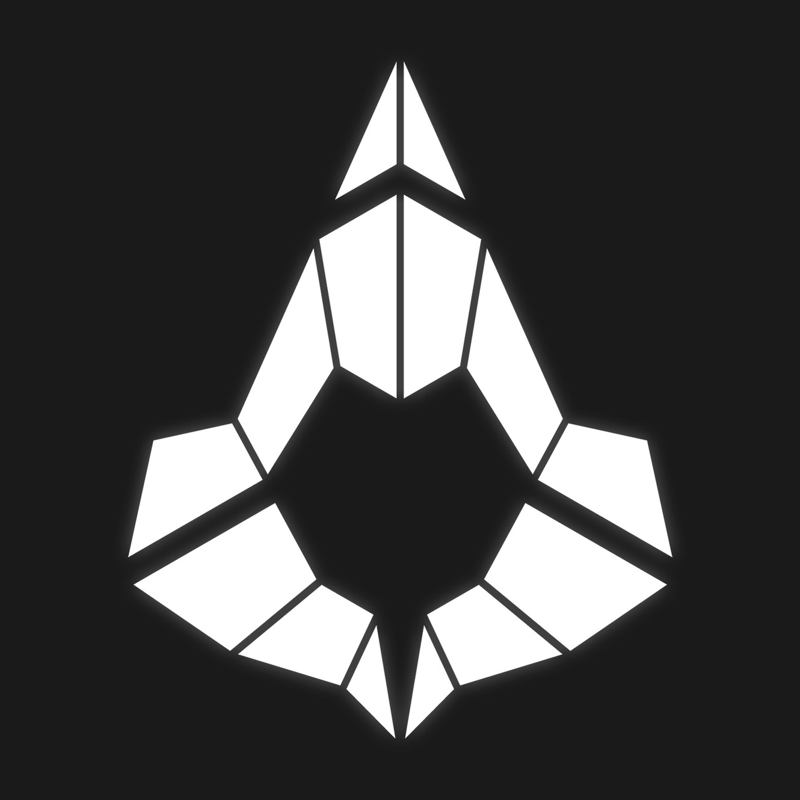

Se ha detectado una paquete de datos corrupto de la Primera Civilización incrustado en la simulación. Pulsa los 4 nodos de frecuencia Isu en orden ascendente (1 → 4) para estabilizar el bloque y recuperar el archivo encriptado de La Verdad.